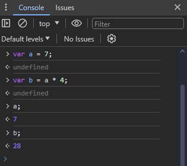

Bölüm 5 JavaScript
JavaScript Nedir?
JavaScript bir web geliştiricinin öğrenmesi gereken 3 dilin sonuncusu. Daha önce HTML ve CSS'i gördük. JavaScript web sayfanıza kullanıcı ile etkileşim ekleyen programlama dilidir. Bu etkileşim bir butona tıklanması, bir forma değer girilmesi veya bir animasyon olabilir. Bir HTML dökümana JavaScript uygulandığında o döküman artık dinamik bir web sayfası olur.
JavaScript tarayıcılarda çalışmak üzere tasarlanmış bir programlama dilidir. Script olarak yani yazı şeklinde program olarak girilir. Tarayıcınız bu script'i (betik de derler) okur ve çalıştırır. JavaScript'i diğer bir programlama dili olan Java ile karıştırmayın, birbirleri ile en ufak alakaları yoktur.
Bir diğer JavaScript temel özelliği ise büyük-küçük harf duyarlı olması. Yani
isim ve İsim değişkenleri kullanılırsa ikisi birbirinden
farklı değerleri ifade eder. Bu yüzden kod yazarken büyük-küçük harflere dikkat ediniz.
Konsola Erişmek
Daha önce hatırlarsanız Geliştirici Araçları (Developer Tools) penceresini açmış ve sayfadaki HTML elemanların kutu modelini incelemiştik. Geliştirici Araçları penceresinin önemli yardımlarından biri de bize bir JavaScript konsolu sunması.
Sayfada herhangi bir elemana sağ tıklayıp "Öğeyi Denetle" (ya da Inspect Element) seçtiğinizde Geliştirici Araçları penceresi açılır ve o eleman HTML kodu içinde gösterilir. Pencereyi incelediğimizde bir de Console sekmesi olduğunu görürüz.

Yazacağınız programda bir hata olduğunda buna programcılıkta bug (böcek) denir. Bu hatayı tesbit edip giderme işine ise debugging denir. Geliştirici Araçları penceresi hatalarınızı bulmakta çok işinize yarayacaktır. Konsol ise size JavaScript kod testleri yapabileceğiniz bir alan verir. Ayrıca konsolda sayfanıza eklediğiniz JavaScript kodun ürettiği hata mesajları da tarayıcı tarafından yazılacaktır.
Hemen tüm tarayıcılarda Geliştirici Araçları vardır. Ama farklı erişim şekilleri olabilir, bunu tarayıcınızın yardım dökümanlarına bakınız. Konsolda direk kod denemesi de yapılabilir.
gibi.
JavaScript Deyim Yapısı
Syntax bir programlama dilinin sözlüğü ve dilbilgisi gibidir. Nasıl bir
konuşma dilinde anlamlı cümleler kurmak için belli kelimeleri belli kurallara göre
bir araya getirdiğiniz gibi, programlama dillerinde de anlaşılabilir bir program
parçası oluşması için o dilin syntax'ına (deyim yapısına) uygun davranmanız
gerekir. JavaScript program deyim yapısına bir örnek:
var kelimesi değişken (variable) tanımlarken kullanılan başlangıç kelimesi.
Daha sonra değişken için vereceğimiz isimi yazıyoruz. İsimin arkasından gelen =
işareti atama (assignment) işareti olarak bilinir, kendisinden sonra deyim satırı
sonuna kadar gelen işlemlerin sonucunu kendisinden önce belirtilen değişkene kaydeder.
var ilkSayı = 5; demek 5 sayısını ilkSayı isimli değişkene
kaydet demektir.
Noktalı virgül işareti deyim satırının sonuna gelindiğini belirtir. Her deyim satırının sonunda noktalı virgül olur. Alt satıra geçmek o andaki deyim satırını bitirmez, ama aynı satırda birden fazla deyim satırı noktalı virgül ile sonlandırılarak yazılabilir istenirse.
var ilkSayı = 5; deyim satırında bir konu daha var, atlamayalım.
var kelimesi ilkSayı değişkeni ilk defa o satırda kullanıldığı
için orada. Daha sonra burada tanımlanan ilkSayı değişkenini kullanırken
tekrar var yazılmaz, değişkenin ilk tanımlandığı yerde olur.
3'üncü satırda = işaretinden sonra noktalı virgüle varana kadar 2 adet
değişkenin toplanması işlemi var. Önce toplama işlemi yapılır (yani 5 ve 9 toplanır),
sonra toplam değişkenine 14 sonucu kaydedilir.
Bu örnek satırlar her biri JavaScript deyim yapısı kurallarına göre yazılmış satırlar oldukları için geçerli bir program parçası oluşturuyorlar.
JavaScipt İfadeler (Statements)
Syntax programın nasıl yazılacağını belirleyen kurallar ve kullanılan kelimeler topluluğuydu, biz buna Deyim Yapısı diyoruz. İfadeler (statements) ise bu kurallara uyarak yazılan ve herhangi bir iş yapan program parçalarıdır. İfadeler bir işi gerçekleştirmek için yazılmış kelimeler , sayılar , noktalama işaretlerinden oluşan bir kod parçasıdır. Örnek yapmak için tarayıcınızın geliştirici araçları penceresinde konsolu az önce gösterdiğimiz şekilde açın ve şu satırları girin:
Bu satırların ilk ikisi geçerli JavaScript ifadeleri. Syntax'a uygun yazılmışlar ve bir
iş yapıyorlar. İlk satır var a = 7; a adında yeni bir değişken
tanımlıyor ve ona 7 sayısını saklıyor. var b = a * 4; ise b
isimli yeni bir değişken tanımlayarak ona a içindeki değeri 4 ile çarparak
elde ettiği değeri koyuyor. * işareti burada çarpma operatörü oluyor.
Hatırlarsanız klavyenizin nümerik pad'inde de aynı işaret çarpma yapmak için kullanılıyor.
Operatörler bir işlem yaparlar, bu ifadede = bir atama işlemi yapıyor,
* da çarpma işlemi yapıyor, her ikisi de birer operatör.
İfadeler bir programlama dilinde işte bu şekil bir iş yapan kod parçalarına verilen addır.
Son iki satırı ise konsolda a ve b değişkenlerinin değerini bize göstersin diye yazıyoruz. Bu satırları girdiğinizde konsolda şöyle bir görüntü oluşur:
Gördüğümüz gibi a değişkeninde 7 değeri , b değişkeninde ise onun 4 katı olan 28 değeri saklanıyor.
Bir program yazdığınızda yüzlerce, bazen binlerce ifade yazarsınız. Bilgisayar bunları çalıştırırken soldan sağa, yukarıdan aşağıya yönde giderek sırayla çalıştırır - aynı kitap okur gibi.
Eşitlikler (Expressions)
Eşitlikler sadece bir değişken ile ifade edilebilirken bir çok değerin operatörlerle işlenmesi sonucunda elde edilen değerler de olabilir. Basit bir eşitlik örneği vermek gerekirse:
Bu basit bir eşitlik. Atama işaretinin (=) sağ tarafında bir değişken değeri (a) , bir operatör (*) ve bir sabit değer (4) var. Yeri gelmişken belirteyim 4 gibi sabit değer verildiğinde bunun adına literal value derler, yani bizde anlık sabit değer gibi bir karşılığı var. Bu örnek bir matematik eşitlik oluyor , programlarımızda buna benzer birçok eşitlikler yardımıyla değer hesaplamaları yaparız.
JavaScript Programı Çalıştırmak
Bir programı çalıştırmak (executing ya da running) nedir? Yazdığınız programın tarayıcı tarafından görülüp içinde yazdığınız kodlara uygun olarak işlemleri yapmasına programın çalışması denir. Daha önce konsolda yazdığımız program satırlarının çalışmasını ve sonuçlarını gördük. Örneğin şu satırları konsola girdiğimizi düşünelim:
Bu program iki değişkene sayı koyuyor ve ikisinin toplamını da başka bir değişkene
saklıyor. Saklıyor da biz sayıyı bilmiyoruz. Kullanıcıya bir mesaj vermek amacıyla
JavaScript alert metodu adı verilen bir yardımcı fonksiyonu kullanabiliriz.
Prgorama şu satırı da ekleyelim.
alert(toplam); ifadesi bir metod çağırıyor. Metodlar kendilerine verilen
parametrelerle bir işler yapan fonksiyon bloklarıdır. alert() metodu JavaScript
programlama dili için küçük bir popup pencere açıp kullanıcıya parametresinde verilen
mesajı göstermesi anlamını taşıyor. Metodlar mutlaka isimlerinden sonra gelen ()
parantezler ile ifade edilir. Eğer metoda bir parametre verilecekse bu parantez içinde
verilir. Bu alert() metoduna parantez içinde vereceğiniz parametre ,
açılacak popup üzerinde yazılı olması istenen mesajdır. Parametrede bir değişken adı
verilirse de o değişkenin sakladığı değer mesajda gösterilir. alert(toplam);
demek , bir popu aç ve orada toplam değerini göster demektir. Satırı girip deneyelim.
Bir popup pencere açıldı ve toplam değeri olan 74 sayısını yazıyor. Sadece konsolda
değeri görmek için bir başka metod olan console.log() metodunu da
kullanabiliriz.
Bu metod değeri konsolda yazacaktır. İleride prgramlarınızda deneme yaparken ve hataları bulmaya çalışırken (debug yaparken) çok kullanacağınız bir metod.
Bu anlattıklarımız bir JavaScript programın tarayıcının konsolunda nasıl çalıştırıldığını gösteriyor.
Çıktı Nedir?
Çıktı kelimesi programlama söz konusu olduğunda işlenen verilerin oluşan sonuçlarının bir yerlere gönderilmesidir. En tipik örneği kullandığınız ekrandır. Ekranınız bir çıktı aygıtı ve değerler ona gönderilerek kullanıcıya gösteriliyor. Daha önce denemeler yaptığımız konsolda JavaScript deyim setinde önceden tanımlı olan bazı çıktı alma metodlarını deneyebiliriz. Sayfaya bir şey yazmayı görelim. Öncelikle içi boş bir sayfa HTML kodunu jsdnm.html dosyasına girelim:
Şimdi konsolu açıp şu JavaScript kodu girelim:
document denilen şey aslında bir JavaScript nesnesi ve şu anda tarayıcıda
gösterilmekte olan sayfanın özel adı. write() ise o document nesnesinin
bir metodu, yani document nesnesi içinde tanımlanmış. Hatırlarsanız az evvel
konsola değer yazmak için console.log() metodu kullanmıştık, bu da
console nesnesinin log() metodudur. Neyse bunları daha çok
göreceğiz. document.write() metodu parametresinde verilen değeri sayfanın
HTML kodunda <body> elemanının içine yazar, yani gördüğümüz alana.
Parametrede verilen değer ise sayfa koduna eklenecek değer ve burada bir string (yazı dizisi) sabit değer (literal) girilmiş. string sabit değerler yazılırken çift (" ") ya da tek (' ') tırnak içinde verilir. Genelde tüm programlama dillerinde yazı değerleri içinde boşluklar olabileceği için tırnak içinde ifade edilir. Sayılar sa direk yazılır. Örnekler:
İlk satır sayfaya 17 sayısını eklerken , ikinci satır toplam değişkeni içinde saklanan değeri, üçüncü ise toplam kelimesini sayfaya yazar. Tırnak içinde yazıldıysa JavaScript artık onu bir değişken adı değil düz bir yazı olarak algılayacaktır.
document.write('<h1>Merhaba Dünya</h1>'); satırı sayfanın HTML koduna
body kısmı içine bir <h1> başlık kodu ekliyor. Böylece
sayfada kocaman bir "Merhaba Dünya!" yazısı görürüz.
Bir diğer çıktı metodu da önceki bölümden hatırladığımız alert() metodu.
yazarsak bize bir popup açıp 15 değerini yazacaktır. Dikkat ederseniz önce parantez içindeki işlemi yapıp sonucunu hesapladı, sonra işlem sonucunu mesaj olarak bildirdi.
console.log() metodu da bir çıktı metodu tabi ki. O da bir değeri konsola
yazıp bize gösteriyor.
Girdi Nedir?
Çıktı kelimesi programın bize verdiği değerleri ifade ederken , girdi kelimesi de programcılıkta bizim programa verdiğimiz değerleri ifade eder. Çünkü onlar programa giriyor. Daha önce bir web sitesinde giriş yapmak için ya da kayıt olmak için form doldurmuşsunuzdur. İşte bu formlar JavaScript programlar tarafından girdi verileri olarak okunur ve program içinde işlenirler.
Girdi metodlarına örnek olarak prompt() metodunu verebiliriz. prompt()
metodu kullanıcıya bir popup açarak bir soru sorar ve cevabınızı girmeniz için size
bir yazı kutusu (input box - girdi kutusu) sunar. Kullanımı şöyledir:
Aynı alert() metodu gibi bir popup açar ve parametresinde verilen yazıyı
siza soru olarak gösterir. Ama bir farkla , sorunun altında cevabınızı girmeniz için bir
kutu olacaktır.
Tamam (ya da OK, sizde ne görünüyorsa) butonuna tıkladığınızda konsolda girmiş olduğunuz isim de yazılacaktır.
"Ümit" değeri burada konsola yazılmasının sebebi, bu değerin prompt() metodunun
geri döndürdüğü değer olmasıdır. Nasıl basit bir toplama işlemi sonucunda bir yeni
değer oluşuyorsa metodların sonucunda da değerler oluşturulabilir. JavaScript programlama
dilini tasarlayanlar prompt() metodunu kullanıcının kutuya girdiği yazıyı
geri döndürecek şekilde tasarlamışlar. İstersek bu değeri bir değişkene kaydederek
program içerisinde daha sonra kullanabiliriz. Örnek:
Satırları konsola girerken her satırda o satırı çalıştırmasın diye alt satıra geçmek
için Shift+Enter ile geçebilirsiniz. Bu program önce size soruyu soruyor ve
girdiğiniz cevabı isim değişkenine saklıyor. Sonra selam adında bir değişken
içinde "Merhaba " ve girdiğiniz değeri yan yana birleştiriyor. Dikkat ediniz "Merhaba "
yazarken kelimeler yapışık olmasın diye sonuna boşluk koydum. En son da alert()
metodu kullanarak kullanıcıya merhaba deniyor.
Web sitelerinde genellikle girdi almak için <form> elemanları
kullanılır, ama formlar kapsamlı bir konu ve ileride göreceğiz inşallah. Şimdilik
burada girdi kelimesinin anlamını açıklamak için daha basit olan prompt()
metodunu örnekledik.
JavaScript Kod Yorumları
Kod yorumları kodunuz içine yazdığınız kodunuzu açıklayıcı yazılardır. Yorumlar bilgisayar tarafından dikkate alınmayan ama siz ya da başka bir geliştirici ileride kodu incelerken kod hakkında açıklamalar içeren yazılardır. Yorumlarda o bölümdeki kodun ne iş yaptığını açıklayan yazılar yazabileceğiniz gibi, ileride kodunuza yapılması gerektiğini düşündüğünüz ilaveler hakkında da olabilir. Yorum yapısı bazen de kodunuza test edebilmek amacıyla yaptığınız deneme kod parçalarını silmeden çalışmasını engellemek amacıyla da kullanılır. Kod parçasını bir yorum içine alarak çalışmasını engellersiniz ama kod hala orada yazılı durmaktadır. Buna kodu yoruma atmak denir.
JavaScript dilinde yorumlar iki şekilde yapılabilir tek satır yorumlar ve birden
fazla satırdan oluşan yorumlar. Tek satır yorumlar // işaretlerinden
sonra yazılır ve satırın sonuna kadar yorum olarak değerlendirilir. Birden fazla
satırdan oluşan yorumların başına /* işaretleri konur, sonuna da
*/ işaretleri konur. Bilgisayar bu ikisi arasında yazılan her şeyi
yorum olarak görür ve dikkate almaz. Konsolda örneklerle açıklayalım. Geliştirici
araçları penceresinde Console sekmesini açalım ve şu kodları girelim. Daha önce de
dediğimiz gibi konsola birden fazla satır kod girerken Shift+Enter tuş
kombinasyonu ile alt satıra geçebilirsiniz.
İlk satırda yorum çalışan bir ifadenin arkasından eklenmiş. Bunu genellikle o satırda
ne yapıldığını anlatmak için yaparız. // işareti sonrasında satır
sonuna kadar yazılan herşey JavaScript tarafından yorum olarak kabul edilir. Editörümüz
de zaten bu yorumun yazı rengini bize değişik göstererek koddan ayrı görünmesine
yardımcı oluyor. Sizin tarayıcınızın konsolunda renkler farklı olabilir, bu renkler kullandığınız
web tarayıcıya ve kullandığınız temaya göre değişir. // işaretinden sonra
alt satıra geçmeden yorum dışına çıkılamaz, yani çalışan bir kod yazılamaz. Alt satıra
geçildiği anda JavaScript otomatik olarak yorumun bittiğini kabul eder.
İkinci satırda yine tek satırlık bir yorum var, ama bu sefer öncesinde bir kod yok, böyle de yorum yazılabilir. Mesela:
bu şekil bir başlık gibi yazılabilir.
/* ve */ arasında yazılanlar ise istendiği kadar uzun ve
bir çok satıra yayılmış yazılabilir. JavaScript /* karakterlerini görünce
yorumun başladığını algılar, ama alt satıra geçerken yorumu otomatik bitirmez. Ne zamanki
*/ karakterlerini görür, o zaman yorumun bitmiş olduğunu algılar.
Bu şekilde açıklayıcı bilgiler de koyabilirsiniz. Bir kullanım amacı da deneme için yazdığınız bir kodu yoruma atmak.
Bu örnekte isim değişken değerini görmek için iki defa console.log()
metodu ile konsola yazdırmışız. Daha sonra bu satırları kullanmayacaksak, ama o
satırları silmek de istemiyorsak şu şekilde yoruma atabiliriz:
JavaScript artık o iki satırı dikkate almayacaktır. Örnek olsun diye satırların birinde
// kullanırken diğerinde /* */ kullanarak yoruma attım.
JavaScript Değişkenler
Değişken ya da variable kelimesi programcılıkta veri değerlerini saklamak için ayrılan birimlere verilen addır. Değişkenler bilgisayar hafızasında bir değeri saklamak için ayrılmış bölgeleri temsil eder. Bunu bir depoda değişik cisimleri saklamak için kullandığınız kutulara benzetebilirsiniz. Nasıl her kutunun üzerinde içindekinin ne olduğunu belirten bir kod etiketi olursa değişkenlerin de hafızada ayrılan yeri temsil eden bir ismi olur.
JavaScript'de bir değişken ilk tanımlanırken (yani deklare edilirken) var
kelimesi kullanılır, daha önceki örneklerde görmüştük. Değişken tanımlanırken adından sonra
bir eşittir = atama operatörü kullanılarak ilk değeri verilir.
Yukarıdaki örnekte x isimli değişkene (ki "x değişkeni" diye söylenir) 7
sayı değeri verilerek tanımlaması yapılıyor. Depodaki kutuları düşünürsek bir kutunun
üzerinde x yazılı bir etiket var ve kutunun içinde 7 sayısı var. Tanımlama
yapılması ise o kutunun oraya ilk konduğu zaman demektir, daha sonra aynı kutunun içine
başka şeyler koyarken tekrar var kelimesini kullanmamıza gerek yoktur.
Değişken isimlerini siz seçersiniz , bunu yaparken içeriğindeki verinin ne olduğunu özetleyen bir şeyler tercih etmelisiniz. Örneğin:
güzel bir örnek. String değerler verilirken tırnak içinde olması gerektiğinden bahsetmiştik, sayıları ise direk değerini yazabiliriz. Değişik değişken tiplerine nasıl değer girileceğine dair ileride incelemelerimiz olacak. Ayrıca her ifadenin sonunda noktalı virgül koymayı unutmayınız, noktalı virgül JavaScript'e ifadenin burada bittiğini anlatır.
Değişkene tanımlama yaptıktan sonra değerini var kelimesi kullanmadan
değiştirirsiniz demiştik. Örneğin arabam değişkenine daha sonra başka bir değer
verilirse:
arabam değişkeni ilk satırda tanımlanmış olduğu için ikinci satırda yeni değer
verilirken artık var kelimesi kullanılmaz.
Değişken tanım satırında değer vermeden tanımlanırsa ona undefined yani belirtilmemiş değişken denir. Konsolda deneyelim.
Konsol bize a yazıp enter bastığımızda 5 değerini verirken, b yazıp enter bastığımızda undefined diyecektir. Yani değeri verilmemiş. Bir de hiç tanımlanmamış c yazıp entere basalım, bu sefer "c is not defined" hata mesajı verilerek konsol bize c isimli bir değişkenin hafızaya tanımlanmamış olduğunu bildirir. Bu defined kelimesi kafanızı karıştırmasın, b değişkeni için konsol bize değerinin tanımsız olduğunu belirtirken, c değişkeninin ise hiç tanımlanmadığını söylüyor. Yani depoda üzerinde b yazan bir kutu var ama içinde bir şey yok, buna karşın üzerinde c yazan kutuyu hiç bulamadım , o yok diyor.
JavaScript programlama dili büyük-küçük harf duyarlı bir dildir. Bu durumda değişken isimlerini verirken harflerin büyük ya da küçük olmalarına dikkat etmeliyiz. Yani arabam isimli değişkenle Arabam isimli değişkenler JavaScript açısından farklı değişkenleri gösterir. (ya da ARABAM ya da araBam vs).
Değişken İsimlendirme Esasları
Değişkenlere isim verirken açıklayıcı ve mantıklı isimler vermek gerekir. Bunun dışında JavaScript dilinde kullanılacak değişken isimlerinin programsal olarak sıkıntı üretmemesi için belli kuralları dikkate alarak verilmesi gerekir. Aşağıda bunları anlatan bir tablo görülüyor.
| Kural | Örnek |
|---|---|
| Değişken isimleri sayı ile başlayamaz | 3x veya 4araba geçersiz değişken isimleridir. Fakat araba4 veya go4it geçerlidir. |
| Operatörleri isim içinde kullanamazsınız | ar+br veya ts-r veya a*b gibi isimler olamaz. |
| Noktalama işaretleri isim içinde kullanılamaz | isim: vaya isim# olamaz. Ama altçizgi olabilir, mesela _isim vaya bir_şey. |
| Değişken ismi içinde boşluk olamaz | benim arabam geçersizdir ama benimArabam yazabilirsiniz. |
| Değişken isimleri büyük-küçük harf duyarlıdır | arabam, Arabam ve araBam hepsi farklı değişkenlerdir. |
| JavaScript programlama dilinde anlamı olan kelimeleri kullanamazsınız | Örnek Window, open, location, string, document değişken ismi olamaz. Ama örneğin myWindow veya myDocument yazabilirsiniz. |
JavaScript Veri Tipleri
Herhangi bir programlama dilinde veri tipleri denince aklımıza değişkenlerin saklayabileceğiz verilerin türleri gelir. JavaScript'de birçok değişik veri tipi vardır. En temel veri tiplerini anlatan bir tablo aşağıda görülüyor.
| Veri Tipi | Ne Olduğu | Örnek |
|---|---|---|
| String | Yazıdan oluşan bir karakter dizisi. Tırnak içinde verilmelidir. | konu = "Arabalar"; |
| Sayı | Rakamlardan oluşan bir sayı değeri. Tırnak içinde verilmez. | sayaç = 18; |
| Boolean | true ya da false (doğru - yanlış) şeklinde sadece iki olasılıklı değer. Tırnak içinde verilmez. | büyükMü = true; |
| Array | birden çok değer girmek için bir yapı | arabalar = ["Dacia", "Tofaş"]; |
| Nesne | JavaScript'de herşey bir nesnedir. | kişi = { adı: "Ümit", |
| Null | Olmayan bir şey | isim = null; |
| undefined | Tanımlanmış ama değer girilmemiş değişkenin değeri | var isim; |
String alfa nümerik karakterler, noktalama işaretleri vs klavyenizden
yazdırabildiğiniz herşeyin çift ya da tek tırnak içinde yazılmasıyla oluşan düz yazı
değerlerin veri tipidir. Konsolda şu satırları deneyelim :
String değerin içinde de tırnak işareti kullanmak istersek de:
Bir de mecburen aynı tırnağı string değer içinde de kullanmak zorunda kalırsak \
(ters slash) işareti ile özel karakter olduğunu belirtiriz
Ters slash ile başka girilebilen özel karakterler de var , aşağıda bir tablosu var.
| Yazılışı | İşlevi |
|---|---|
| \' | Tek tırnak yazar |
| \" | Çift tırnak yazar |
| \\ | Bir tane ters slash yazar |
| \b | Silme tuşu (backspace) ile aynı işi yapar |
| \f | Form Feed |
| \n | Yeni satır (enter ile aynı) |
| \r | Carriage Return |
| \t | Tab tuşu ile aynı |
| \v | Vertical Tab |
Sayı veri tipi her türlü sayısal değer için kullanılır. Dikkat edilmesi
gereken nokta ise virgüllü sayıların yazılması Türkçe'mizde bir'den küçük sayıları
ifade ederken virgül kullanırız (17,4) gibi. Ancak tüm programlama dillerinde bu sayılar
nokta ile ifade edilir. Örnekler:
Boolean veri tipi sadece iki değer alabilir true ya da
false bir işlemin sonucu doğru ise boolean bir değerle ifade edilebilir.
Karşılaştırma işlemleri sonuçları da boolean değer olur.
Array veri tipi ise birden çok verinin bir tek isim altında saklanabilmesi
için kullanılır. Değerler köşeli parantez [ ] içinde virgül ile ayrılmış
olarak yazılır. Değerlerin bir tanesine erişmek için ilk eleman sıfır olmak üzere sıralı
olarak kullanılabilir. Konsolda bir örnek:
arabalarım[0] şeklindeki notasyona dikkat ediniz. Array içindeki bir elemanın
değerine erişmek için değişken ismi yanına köşeli parantez içinde eleman numarası
yazılıyor. İlk eleman da sıfır numarasıyla ifade edilir (1-bir değil). Bu köşeli
parantez içine girilen sıra numarasına o değerin index'i denir. Array içindeki
tüm değerler aynı veri tipinde olmasına gerek yoktur. Yukarıdaki örnekte bir kısmını
string , bir kısmını sayı ya da başka bir tip de verebiliriz.
gibi. Nesne veri tipi ise en önemli veri tiplerinden. Aslında JavaScript'de
her şey bir nesnedir, bunu JavaScript dilini kullandıkça göreceksiniz. Nesneler key-value
çiftleri şeklinde ifade edilirler ve süslü parantez { } içinde yine
değer çiftleri arasında virgül kullanarak ifade edilir.
Key adının arkasından iki nokta üstüste koyarak arkasından value değeri
girilir. Değerleri daha sonra kullanırken de değişken adı . ve key
adı yazılır. Görüldüğü gibi nesnelerin çoklu verileri işlemekte kullanılması çok
daha anlamlı geliyor.
null tipi değişkenler bir çeşit değeri olmayan değişkenlerdir. Null
değer daha önce sözü geçen undefined değerden farklı. null değer genellikle
programsal olarak verilir. Yani a = null; gibi ve özellikle bir değişkeni
tanımlarken bir ilk değer vermemek ama undefined de değer vermemek için verilir.
Undefined değer verilmemiş anlamına gelirken null ise programcılıkta değeri
null demektir, yani "olmayan değer" değerine sahip gibi.
JavaScript Operatörler
Operatörler değişkenler üzerinde işlemler yapan JavaScript öeleridir. En çok bilinenleri matemetik operatörleridir.
gibi. Buradaki + - * / sembolleri birer aritmetik operatördür. Değişkenlere
işlem yapmak için kullanılan operatörler görevlerine göre şöyle gruplanır:
- Aritmetik operatörler
- Atama Operatörleri
- String Operatörleri (concatenation)
- Karşılaştırma operatörleri
- Mantıksal operatörler
- Veri tipi operatörleri
Aritmetik Operatörler
Aritmetik operatörler sayısal değerleri kullanıp sayısal sonuçlar elde eden operatörleridr. Aşağıdaki tabloda aritmetik operatörler ve anlamları veriliyor.
| Operatör | Ne yapar? | Örnek |
|---|---|---|
| Toplama + | İki değeri toplar | 2 + 2; |
| Çıkarma - | İkinci değeri ilkinden çıkarır | 4 - 2; |
| Çarpma * | İki değeri çarpar | 7 * 3; |
| Bölme / | Birinci değeri ikinciye böler | 8 / 4; |
| Modül % | Bölme işleminden kalanı bulur | 5 % 2; |
| Arttırma ++ | Değeri +1 arttırır | var x = 7; x++; |
| Azaltma -- | Değeri 1 eksiltir | var y = 5; y--; |
Atama Operatörleri
.
.
< 4. Bölüm 5. Bölüm >